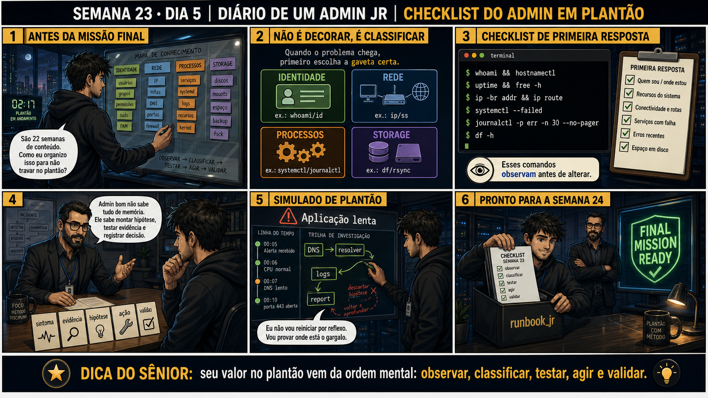

Checklist do Admin de Plantão
documentar não é o que você faz depois de resolver — é o que você faz enquanto investiga
ANTES DE ALTERAR, OBSERVE. DEPOIS DE ALTERAR, VALIDE.
1. O chamado
💡 Passa o mouse nas palavras destacadas pra ver uma dica rápida — clica se quiser a explicação completa com analogia.
2. Antes de ver as opções — tenta responder
3. Questão comentada — clica numa alternativa
4. Decodificador de conceitos
Clica em qualquer termo pra ver a definição completa e uma analogia do dia a dia:
5. Ferramentas e leitura da evidência
| Camada | Comando | Semana |
|---|---|---|
| Processo | systemctl status | 23 |
| Escuta local | ss -tlnp | 23 |
| DNS | dig +short | 14, 23 |
| Firewall/conectividade | nc -zv, nft list ruleset | 15, 23 |
| Recursos | df -h, free -h | Fase 1 |
--- checklist de triagem, chamado #2305 ---
[16:03:00] Alarme: aplicação X não responde
[16:03:15] systemctl status app-x.service -> active (running)
[16:03:40] ss -tlnp | grep 8080 -> nada retornado
[16:04:10] journalctl -u app-x.service --since "5 min ago"
-> "Falha ao fazer bind: porta 8080 já em uso"
[16:04:50] ss -tlnp | grep 8080 -> processo antigo (PID 1122) ainda preso na porta
[16:05:30] Causa raiz encontrada: processo antigo não finalizou corretamente
[16:06:00] kill -9 1122, systemctl restart app-x.service
[16:06:30] ss -tlnp | grep 8080 -> processo novo escutando corretamente
[16:07:00] Relatório: causa = processo zumbi preso na porta; ação = kill + restart; validado
5.1 O painel 4 da prancha de hoje mostra o júnior de plantão pulando direto pra reiniciar, sem seguir o checklist, "porque já é 3 da manhã e ele só quer voltar a dormir"
Um colega acha que sob pressão de horário, pular etapas do checklist é uma economia de tempo aceitável.
5.2 "Preciso seguir o checklist inteiro, na ordem exata, sempre — mesmo quando o alarme já diz claramente qual é o problema?"
Um colega segue o checklist do início ao fim mecanicamente, mesmo quando o alarme já dizia "disco cheio" explicitamente.
6. Procedimento profissional
- Ao receber um alarme, leia a mensagem completa antes de qualquer ação — ela pode já apontar a camada certa.
- Sem indicação clara, siga a ordem: processo → escuta local → DNS/conectividade → recursos (disco/memória).
- Documente cada teste e resultado EM TEMPO REAL, não só no relatório final.
- Só aja (reiniciar, corrigir configuração) depois de ter uma hipótese de causa sustentada por evidência.
- Feche o chamado com um relatório claro: causa raiz, ação tomada, validação de que resolveu.
7. Laboratório guiado — marca conforme for testando
- CENÁRIOAção: Reproduza o incidente exato do exemplo de hoje — processo zumbi preso numa porta — pra treinar o checklist completo do zero, não só ler sobre ele.$ sudo nc -l -p 8080 & $ echo "processo zumbi simulado: PID $!" $ sudo systemctl restart app-x.service $ sudo systemctl status app-x.service | grep Active $ ss -tulpn | grep 8080Resultado esperado: app-x.service aparece como active (running), mas ss -tulpn mostra a porta 8080 ocupada pelo PID do nc (o zumbi), não pelo processo novo — exatamente o sintoma do chamado #2305.Por que fizemos isso: seguir o checklist inteiro (processo → escuta → log → causa raiz) só faz sentido de verdade quando existe um sintoma real pra investigar, com uma causa raiz genuína escondida nele.Cilada comum: só em VM descartável — anote o PID do processo zumbi simulado, você vai encerrá-lo explicitamente no teardown, já que o systemctl restart sozinho não resolve isso.
Se o seu resultado foi diferente
ss -tulpn não mostra nada na porta 8080 → confirme que onc -l -p 8080 &realmente ficou rodando em segundo plano comjobs -l; alguns shells encerram processos em background ao fechar a sessão. - Simule um cenário de incidente numa VM de laboratório (ex.: processo antigo preso numa porta, como no exemplo da aula).Resultado esperado: sintoma reproduzido — aplicação não responde na porta esperada.
- Siga o checklist completo (processo → escuta → logs), documentando cada passo com timestamp, como no exemplo.Resultado esperado: log de investigação com timestamp de cada teste e resultado.🧑🏫 Aqui entra o Mentor (em breve): se você travar em algum ponto do checklist sem saber o próximo passo, este é o ponto onde o chat com o Sênior-IA vai te ajudar a decidir a próxima verificação.
- Corrija a causa raiz encontrada, e valide com os mesmos comandos que revelaram o problema.Resultado esperado: aplicação respondendo normalmente, confirmado com evidência.
- Escreva o relatório final seguindo o formato: causa raiz, ação tomada, validação.Resultado esperado: relatório completo e claro, pronto pra ser lido por outra pessoa da equipe.
- CENÁRIOAção: Encerre o processo zumbi e confirme que o app-x real assume a porta corretamente — a validação final do seu relatório de fechamento.$ sudo kill -9 SEU_PID_ANOTADO $ sudo systemctl restart app-x.service $ ss -tulpn | grep 8080 $ jobs
🔍 Detalhar esse comando
- kill
- Envia um sinal a um processo pelo PID — apesar do nome, nem todo sinal mata o processo; sem opção nenhuma, o padrão é SIGTERM, um pedido educado de encerramento.
- -9
- Sinal SIGKILL — força o encerramento imediato do processo, sem chance dele fazer limpeza própria. Use como último recurso, quando um kill comum (SIGTERM) não for suficiente.
Resultado esperado: ss -tulpn agora mostra o PID do app-x.service (não mais o nc) escutando em 8080, e jobs vem vazio.Por que fizemos isso: fecha o chamado #2305 com evidência: causa raiz confirmada (processo zumbi), ação tomada (kill + restart), validação (porta assumida pelo processo certo) — o mesmo formato de relatório da seção 6 de hoje.Cilada comum: esquecer de matar o processo zumbi antes de reiniciar o serviço real — o systemctl restart sozinho não libera uma porta ocupada por outro processo que não seja o dele.Se o seu resultado foi diferente
"kill: (PID): No such process" → o processo já não existe mais (pode ter caído sozinho). Rodess -tulpn | grep 8080de novo pra confirmar quem está segurando a porta agora, antes de tentar matar de novo.
8. Validação e encerramento
- Um checklist de triagem existe pra funcionar sob pressão, sem depender de memória perfeita.
- Documentar em tempo real é mais confiável do que reconstruir a investigação de memória depois.
- O checklist é apoio à decisão — evidência clara permite pular direto pra causa provável.
- Agir sem diagnóstico (reiniciar por impulso) tende a custar MAIS tempo, não menos.
Rollback e limites
9. Resposta final
🏁 Semana 23 concluída — consolidação completa antes da Missão Final
Você fechou cinco dias que juntaram tudo que a Fase 2 construiu até aqui: DNS e firewall isolados um do outro, processo e rede diagnosticados juntos, automação de healthcheck em bash, backup rsync resiliente a queda de rede, e o checklist de triagem que amarra tudo isso numa única referência prática de plantão.
Amanhã começa a Semana 24 — a Missão Final Júnior. Um incidente único, do início ao fim, que vai exigir tudo que você aprendeu desde a Semana 1: Linux, processos, bash, storage, redes, DNS, firewall, VPN, VLAN, NFS, Samba. É o fechamento de toda a Fase Júnior antes do Pleno.